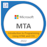

Email: rybarski@gmail.com
Website: https://codebyrafal.com
Certifications
MTA: Introduction to Programming Using HTML and CSS - Certified 2022Personal Overview
Experienced CompTIA A+ certified computer technician with 8 years of expertise in troubleshooting and configuring Windows-based technology. Proven ability to resolve hardware, connectivity, and peripheral faults in customer-focused environments. Adept at providing technical support, collaborating with teams, and working independently.Transitioned into IT automation technology analysis, ensuring pharmaceutical industry compliance with standards and regulations. Skilled in data analysis, quality control, and system maintenance. Known for efficient problem-solving and commitment to data integrity and security. A motivated team player with strong organizational skills. Additionally, engage in web development as a hobby, staying current with industry trends.
Experience
Automation Technology Analyst
Pfizer, Newbridge Co. Kildare
- Analyzing data generated by automated systems to improve efficiency, ensure quality control, and support decision-making processes in the pharmaceutical industry
- Ensuring that all automation technologies comply with industry standards and regulations, such asthose set by the Food And Drug Authorities. This includes ensuring data integrity and security.
- Providing technical support for automated systems, identifying and resolving issues, and ensuring the maintenance of these systems for optimal performance.
IT Support Engineer level 3
DXC Technology Company, Newbridge Co. Kildare
- Providing Level 2 & 3 Deskside support to end users in office and pharmaceutical production environments with use of the ticketing system.
- Supporting Windows based technology including Windows 10, Microsoft Office suites and Office 365, •Upgrades, backup, End Point Protection and Data Integrity.
- Physical media OSI lvl1 troubleshooting including fibre and copper connections
Rollout Engineer
Manpower, Newbridge Co. Kildare
- Imaging of new laptop devices with desired OS version following documentation
- Handover old laptop & equipment from users
- Transfer data from old laptops to new devices, additional software installation and quality check
Education
BTE Further Education and Training School
Zywiec, Poland
- Advanced Certificate in IT, Information Technology